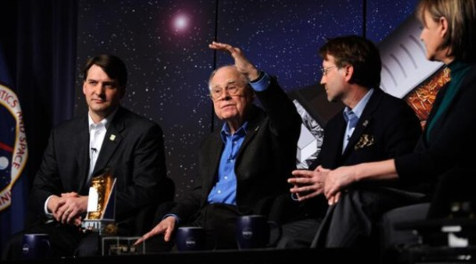

EXO
WORLDS
Step beyond our sky and witness the untold story of a lone machine that changed how we see the universe.
Your journey into the unknown begins now...

A Tribute to William Borucki & The Kepler Team
Inspired by Dr. William Borucki, David Koch, and the NASA Kepler Mission Team, our project transforms their historic discoveries into an interactive story—honouring the pioneers who taught humanity how to watch the stars blink.
- 95-Megapixel Deep-Space PhotometerEngineered and launched the largest digital camera in space at the time, capable of monitoring over 150,000 stars simultaneously with 84-ppm precision.
- Automated Transit PipelineBuilt the Kepler Science Operations centre software to filter out stellar noise and turn raw brightness curves into verified planetary candidates.
- The K2 Solar-Pressure RescuePioneered an ingenious stabilization method using sunlight photon pressure after two reaction wheels failed in 2013, extending the mission for four more years.
- 2,700+ Confirmed ExoplanetsProved that planets outnumber stars in the Milky Way and identified the first Earth-sized worlds in habitable zones (such as Kepler-186f).
- Historic NASA & Industry AwardsHonoured with the NASA Group Achievement Award, the National Air and Space Museum Trophy (2013), and the John L. “Jack” Swigert Jr. Award for Space Exploration.
- Open-Science LegacyReleased massive public datasets via the NASA Exoplanet Archive, enabling citizen scientists and global researchers to continue discovering worlds years after retirement.
- System ArchitectureMapping tightly packed planetary systems and unfamiliar worlds like super-Earths and mini-Neptunes.
- AsteroseismologyTracking subtle “starquakes” in starlight to measure the true size, mass, and age of distant stars.
- Deep-Space PhenomenaUsing the K2 mission to observe exploding supernovae, active black holes, and binary star systems.
TEAM DORMANT
Named after the silent Kepler telescope—proving that even dormant missions still spark new discoveries.
CHAPTER 1
THE MYSTERY OF THE UNIVERSE
Is anyone out there?
CHAPTER 1
AWAKENING THE COSMOS
THE KEPLER STORY
CHAPTER 1
THE MYSTERY OF THE UNIVERSE
Is anyone out there?
TRANSIT PHOTOMETRY
REAL-TIME FLUX
IMAGE: NASA / AMES RESEARCH CENTER
NO.
NO.
IMAGE: NASA KEPLER MISSION TEAM
SOLAR PANEL
Gallium-Arsenide wings providing power
ANTENNA
High-gain deep-space telemetry dish
95-MP PHOTOMETER
42 CCD array monitoring 150,000 stars
0
STARS MONITORED SIMULTANEOUSLY
3D MODEL: NASA / AMES
CHAPTER 2
ENGINEERING PRINCIPLES
How Kepler worked as one precision instrument.
CHAPTER 2
INSIDE KEPLER
THE TECHNOLOGY BEHIND PLANET DISCOVERY
CHAPTER 2
ENGINEERING PRINCIPLES
How Kepler worked as one precision instrument.
ENGINEERING FOR THE EXTRAORDINARY PRECISION
Capturing Starlight and Measuring Its Secrets
Maintaining Precision and Discovering Distant Worlds
Interactive 3D explorer · Model: NASA / Ames Research Center & JPL specifications
Mission Challenges: When Kepler Lost Its Precision
The K2 Revival: Engineering a Second Mission
CHAPTER 3
A UNIVERSE UNVEILED
Discoveries that changed our cosmic perspective.
CHAPTER 3
DISCOVERIES AND LEGACY
KEPLER'S SEARCH FOR NEW WORLDS
CHAPTER 3
A UNIVERSE UNVEILED
Discoveries that changed our cosmic perspective.
THE HIDDEN LANDSCAPE
0
CONFIRMED EXOPLANETS
MEET TWO OF KEPLER'S WORLDS
HABITABLE ZONE
Kepler-22b
Kepler-186f
NOT TO SCALE
ARTIST'S CONCEPT, NOT A PHOTOGRAPH
THE HANDOVER
KEPLER
2009 TO 2018